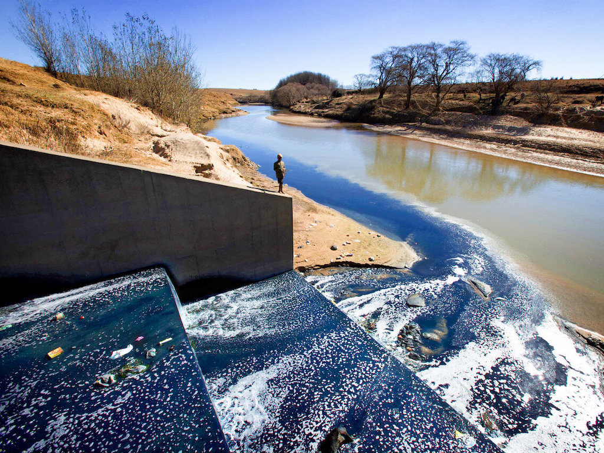
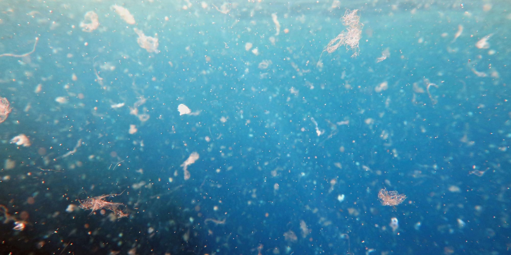
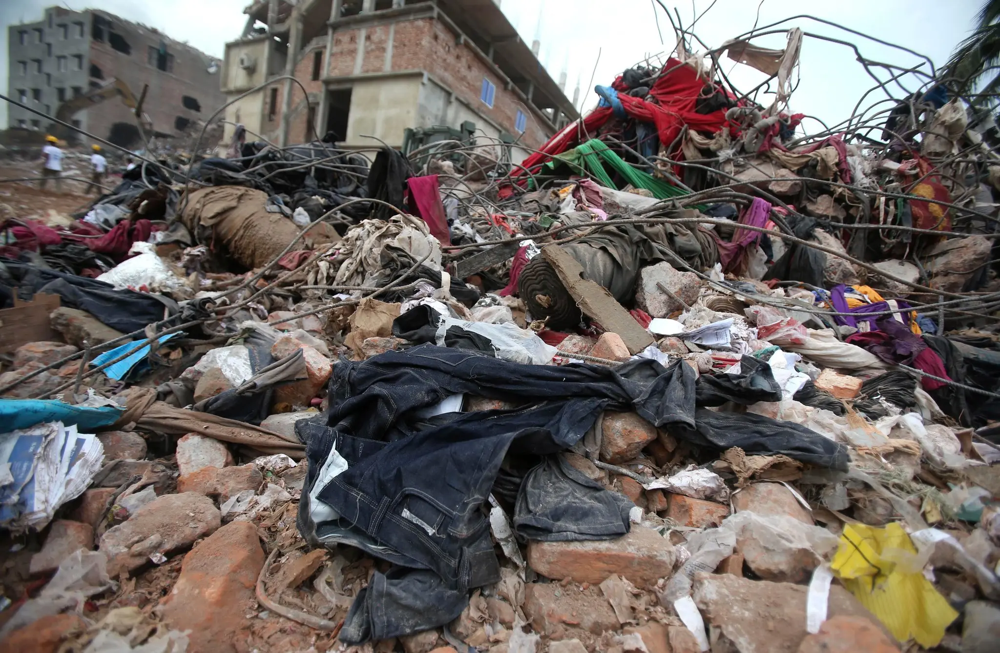

Environmental Impacts
Water Pollution

CREDIT: Effluent from Maseru's garment factories - in particular dyes for jeans - flow into the Caledon (Mahokare) River in Lesotho, South Africa (Robin Hammond/Panos)
In most of the countries in which garments are produced, untreated toxic wastewaters from textiles factories are dumped directly into the rivers.
Wastewater contains toxic substances such as lead, mercury, and arsenic, among others. These are extremely harmful to the aquatic life and the health of millions of people living by those river banks. The contamination also reaches the sea and eventually spreads around the globe.
Another major source of water contamination is the use of fertilizers for cotton production, which heavily pollutes runoff waters and evaporation waters.
Possible Solutions
- Choose clothes made in countries with stricter environmental regulations for factories (EU, Canada, US...)
- Choose organic fibers and natural fibers that do not require chemicals to be produced
Water Consumption
The fashion industry is a major water consumer.
Huge quantity of freshwater is used for the dyeing and finishing process for all of our clothes. As reference, it can take up to 200 tons of freshwater per ton of dyed fabric.
Also, cotton needs A LOT of water to grow (and heat), but is usually cultivated in warm and dry areas. Up to 20,000 liters of water are needed to produce just 1kg of cotton. This generates tremendous pressure on this precious resource, already scarce, and has dramatic ecological consequences such as the desertification of the Aral Sea, where cotton production has entirely drained the water (see pictures above).
"85 % of the daily needs in water of the entire population of India would be covered by the water used to grow cotton in the country. 100 million people in India do not have access to drinking water." says Stephen Leahy from The Guardian.
Possible Solutions
- Choose fibers with low water consumption such as linen, recycled fibers, etc
Microfiber Pollution

CREDIT: Getty
Every time we wash a synthetic garment (polyester,nylon, etc), about 700.000 individual microfibers are released into the water, making their way into our oceans. Scientists have discovered that small aquatic organisms ingest those microfibers. These are then eaten by small fish which are later eaten by bigger fish, introducing plastic in our food chain. See more info #WhatsInyMyWash and on Stop! Micro Waste.
A recent study is also showing that wearing synthetic fibers is releasing plastic microfibers into the air. According to the study one person “could release almost 300 million polyester microfibres per year to the environment by washing their clothes, and more than 900 million to the air by simply wearing the garments”.
"85 % of the daily needs in water of the entire population of India would be covered by the water used to grow cotton in the country. 100 million people in India do not have access to drinking water." says Stephen Leahy from The Guardian.
Possible Solutions
- Choose natural or semi-synthetic fibers
- Wash clothes only when you need to
- Wash clothes at a lower temperature (30ºC)
Waste

CREDIT: Wong Maye-E/Associated Press
Clothing has clearly become disposable. As a result, we generate more and more textile waste. A family in the western world throws away an average of 30 kg of clothing each year. Only 15% is recycled or donated, and the rest goes directly to the landfill or is incinerated.
Synthetic fibers, such as polyester, are plastic fibers, therefore non-biodegradable and can take up to 200 years to decompose. Synthetic fibers are used in 72% of our clothing.
Possible Solutions
- Choose natural or semi-synthetic fibers
- Buy less, buy better quality and recycle
https://www.thegoodtrade.com/features/what-is-fast-fashion
https://www.sustainyourstyle.org/en/whats-wrong-with-the-fashion-industry#anchor-fast-fashion